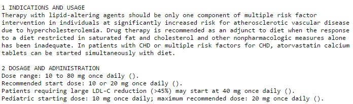
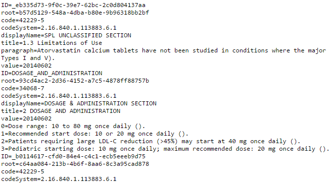
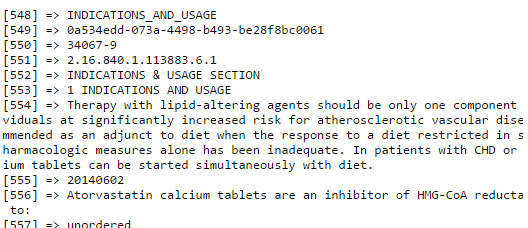

Iterating over the Response Array
JSON Arrays in PHP
Recall from the last step that we ended up with an XML string as our response. This is because DailyMed's /spl/{SETID} resource does not return JSON. As mentioned previously, most, but not all of the resources return JSON so this particular resource is an exception. In this section of the guide, I will explain how to convert XML to JSON, then I will explain how to iterate over the DailyMed API JSON array using PHP.
Converting a XML String to JSON Array
It is simple to convert XML to JSON in PHP. First, we need to convert the XML string to an XML object using the PHP function simplexml_load_string. Then, we will encode the resulting XML object to a JSON object, then decode it to an associative array.
$xmlObject = simplexml_load_string($xmlString);
$jsonObject = json_encode($xmlObject);
$jsonArray = json_decode($jsonObject,TRUE);Iterating over the JSON Array
Now that we have the JSON associative array, we can iterate over it. Although outputing the JSON object using var_dump will show us all of the keys and values, it is still quite difficult to read from the browser (even if the Content-Type is set to plain/text is set). Pasting the JSON string into the CodeBeautify JSON Viewer can make it much easier to find the fields we want to extract.

As you can see, iterating through this array will not be a simple task, as it is a complex array with nested arrays. More specifically, it is multidimensional, an associative array with nested associative and indexed arrays with no logical pattern. As practice, one could try iterating through the array using the following PHP code to access the indication(s) of atorvastatin, along with its dosage and administration information:
foreach($jsonArray as $a=>$b){
if($a=='component'){
foreach($b as $c=>$d){
if($c=='structuredBody'){
foreach($d as $key=>$value){
if($key=='component'){
foreach($value as $e=>$f){
if($e==2){
foreach($f as $g=>$h){
if($g=='section'){
foreach($h as $i=>$j){
if($i=='title') echo "$j\n";
if($i=='text') foreach($j as $k=>$l) if($k=='paragraph') echo "$l";
}
}
}
}
}
}
}
}
}
}
}foreach($jsonArray as $a=>$b){
if($a=='component'){
foreach($b as $c=>$d){
if($c=='structuredBody'){
foreach($d as $key=>$value){
if($key=='component'){
foreach($value as $e=>$f){
if($e==3){
foreach($f as $g=>$h){
if($g=='section'){
p; foreach($h as $i=>$j){
if($i=='title') {
echo "\n\n$j\n";
}
if($i=='excerpt'){
foreach($j as $k=>$l){
if($k=='highlight'){
foreach($l as $m=>$n){
if($m=='text'){
foreach($n as $o=>$p){
if($o=='paragraph'){
foreach($p as $q=>$r){
echo "$r\n";
}
}
}
}
}
}
}
}
}
}
}
}
}
}
}
}
}
}
}Your php page should now look something like this.

You've probably noticed how long and drawn out the above code is. While it may be a good practice to iterate through an multidimensional associative array, this approach quickly becomes tiresome, especially if large amounts of data are needed. There must be a better solution that more effectively predicts what the elements are without having to write large amounts of nested foreach loops.
Recursive Iterators?
You may be thinking that using a recursive approach may be helpful for flattening out the nested arrays to make it more predictable to traverse. Let's try this:
$iterator = new RecursiveIteratorIterator(new RecursiveArrayIterator($jsonArray));
foreach($iterator as $key=>$value) echo "$key=$value\n";
or more succinctly:
foreach(new RecursiveIteratorIterator(new RecursiveArrayIterator($jsonArray) as $key=>$value) echo "$key=$value\n";
The first line defines a new iterator using new RecursiveArrayIterator. However, because the arrays are nested, we need another iterator to recursively iterate over it, that's where the new RecursiveIteratorIterator comes in. The RecursiveIteratorIterator The effect is to "flatten" out the multidimensional array into a one-dimensional array. This is a portion of the result based on the code above:

A quick peruse through the result tells us that this is insufficient for our needs. Notice that ID is used on three occasions just in this small snippet alone. However, because we now know that the key names repeat themselves, they are somewhat irrelevant. Let's try a slight modification to make things even easier to read:
$indexedArray = iterator_to_array(new RecursiveIteratorIterator(new RecursiveArrayIterator($jsonArray)),FALSE);
print_r($indexedArray);
This generates the following output:

As the variable names suggest, the code above outputs the more familiar indexed array, which then allows us to access elements easily using an index. While this approach works, the indices are inconsistent between different product labels stored in the API, so this approach is not feasible for multiple searches for different drugs.
Accessing Elements in a Multidimensional Array
Because we know the keys and values of the array, we do not need to iterate endlessly to find the values we require. Instead, we can access the same elements in different drug product labels directly. The reason we do not build a one-size-fits-all template to access all of the elements is that on examination of the different product labels, the nesting of elements are often inconsistent, and accessing the same elements for different drugs requires completely different paths.For instance, comparing atorvastatin to amlopidine, their paths for accessing their dosage arrays are quite different.
$jsonArray['component']['structuredBody']['component'][3]['section']['excerpt']['highlight']['text']['paragraph']
$jsonArray2['component']['structuredBody']['component'][2]['section']['component'][0]['section']['text']['paragraph']
Because paths to similar elements differ inconsistently between medication labels, building a template to access the same elements requires more complex logic.